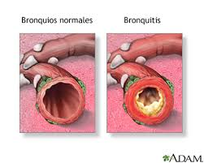
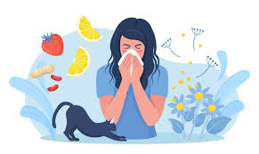

Resfriado común

El resfriado es causado por virus que se transmiten fácilmente. Sus síntomas incluyen estornudos, congestión nasal y dolor de garganta.
Con la llegada del otoño, los cambios de temperatura y la humedad favorecen la aparición de algunas enfermedades típicas de esta estación. A continuación te presentamos las más frecuentes:
El resfriado es causado por virus que se transmiten fácilmente. Sus síntomas incluyen estornudos, congestión nasal y dolor de garganta.
A diferencia del resfriado, la gripe suele causar fiebre alta, dolores musculares y cansancio intenso. Cada año aparecen nuevas variantes, por eso se recomienda la vacunación.

La bronquitis suele aparecer después de un resfriado mal cuidado. Se caracteriza por tos persistente, mucosidad y, en ocasiones, dificultad para respirar.

El polen de algunas plantas de otoño y el polvo en interiores pueden provocar estornudos, picor de ojos y congestión nasal en personas alérgicas.